计算机基础
冯诺依曼计算机
冯诺依曼计算机：以运算器为中心
- 输入设备、输出设备，控制器，运算器，存储器
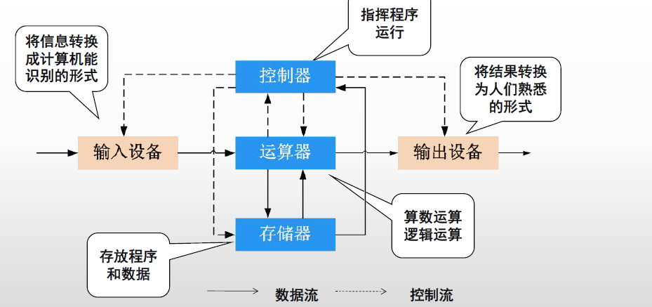
现代计算机硬件图
当前主流的计算机（建立在冯诺依曼体系上）：以（内）存储器为核心
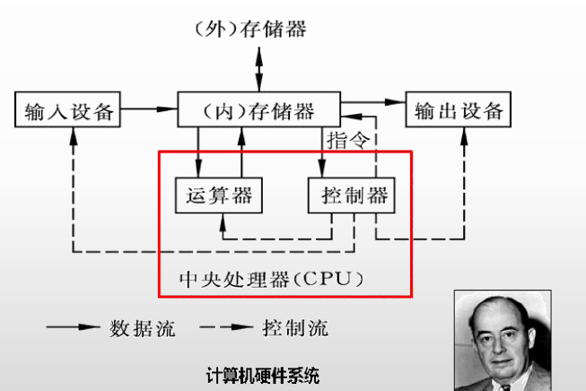
中央处理器（CPU）
包括运算器和控制器
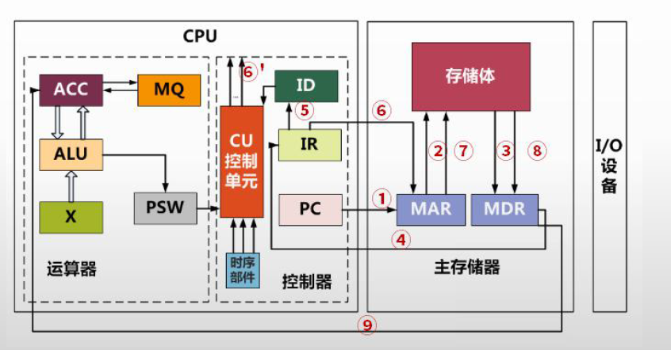
- 运算器
- ALU（算术逻辑单元）：数据的算术运算和逻辑运算；
- AC（累计寄存器）：通用寄存器，ALU使用，暂存源操作数和结果；
- DR（数据缓冲寄存器）：写内存时，暂存指令和数据；
- PSW（状态条件寄存器）：存状态标志和控制标志（如中断标志、溢出标志）；
- 控制器
- PC（程序计算器）：存储下一条执行指令的地址；
- IR（指令寄存器）：存储即将执行的指令；
- ID（指令译码器）：对指令中的操作码字段进行分析解释；
- AR（地址寄存器）：保存当前CPU所访问的内存单元的地址；
- 时序部件：控制时序控制信号。
指令的执行步骤：
- 取指：PC -> AR -> 存储体 -> DR -> IR
- PC 存储的指令地址，通过内存获取真是指令，存到 IR 中；
- 分析：OP（操作） -> ID -> CU控制器
- 执行：Ad -> AR -> 存储体 -> DR -> AC
主存
一般以 8位二进制 作为基本的存储单元。
数据总线：一次处理n位的数据，则数据总线的长度为n，n同时表示为一个字的长度；
地址总线：需要n位二进制数表示所有的地址，则地址总线的个数为n；
存储器
分类
按照构成材料分类：
- 半导体存储器
- 静态存储器：双稳态触发器
- 动态存储器：依靠电容上的电荷存储信息，主存
- 磁存储器
- 利用磁性材料两种不同的状态长期保存信息，外存
- 光存储器
- 利用光斑、晶像变化保存信息，外存
按照工作方式分：
- 读写存储器：RAM；
- 只读存储器：
- 固定只读存储器ROM：不能写；
- 可编程的只读存储器PROM：只能写一次；
- 可擦除可编程的只读存储器EPROM：可多次编程，紫外线擦除；
- 电擦除可编程的只读存储器EEPROM：可多次编程，电擦除；
- 闪存：接近EEPROM，U盘
按照访问方式分：
- 按照地址访问；主存
- 按照内容访问：Cache
按照寻址方式分：
- 随机存储器RAM：按地址访问存储器的任一单元，主存；
- 顺序存储器SAM：访问时按顺序查找目标地址，磁带；
- 直接存储器DAM：按照数据块所在位置访问，磁盘；
- 相联存储器：也是随机存储，但是选择单元读写取决于内容而不是地址，如Cache；
校验码
码距和检错纠错
码距：编码系统中任意（所有）两个码字的最小距离；
- 距离：同一位置上不同值的个数和；
纠错检错：
- 在一个码组内为了检测 e 个误码，要求最小码距应该满足： d >= e + 1；
- 在一个码组内为了纠错 t 个误码，要求最小码距应该满足： d >= 2t + 1；
- 同时纠错检错： d >= t+ e + 1；
奇偶校验码
增加冗余位：只能发现奇数个位置出错的情况
- 偶校验码：所有1的个数（含冗余位）为偶数；
- 奇校验码：所有1的个数（含冗余位）为奇数；
分组校验：比如每8位添加一位冗余位
海明码
基于奇偶校验、分组校验；海明码默认进行偶校验
- 侦测两个或以下同时发生的比特错误，并能够更正单一比特的错误；
- 如在一个7位的信息中，单个位出错有7种可能，因此3个错误控制位就足以确定是否出错及哪一位出错；
海明码的校验码的位置必须是在2^n位置（n从0 开始，分别代表从右边数起分别是第1、2、4、8、16……），信息码也就是在非2^n位置
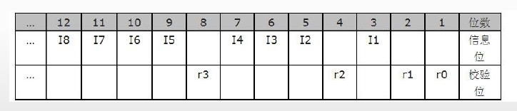
设数据位为n位，校验位位k位，则n和k必须满足以下关系：2^k >= n + k + 1；
比如7个bit中，三个校验位，4个数据位
- 第一组：1(001)，3(011)，5(101)，7(111)；
- 第二组：2(010)，3(011)，6(110)，7(111)；
- 第三组：4(100)，5(101)，6(110)，7(111)；
假设接收到数据后，计算出来的第一、二、三组的偶校验结果分别是0，1，0，则是第二位数据出了问题。
循环冗余校验码CRC
生成多项式和信息码字
生成多项式为 $G(X)=X^4+X+1$，对应信息码字为 10011：
- 信息码的位置k，表示为$X^k$是否在生成多项式中存在；
模二除运算
补位0（个数位最高次幂的值），采用不进位加法计算（即异或），最后得到的余数为校验码：
示例：
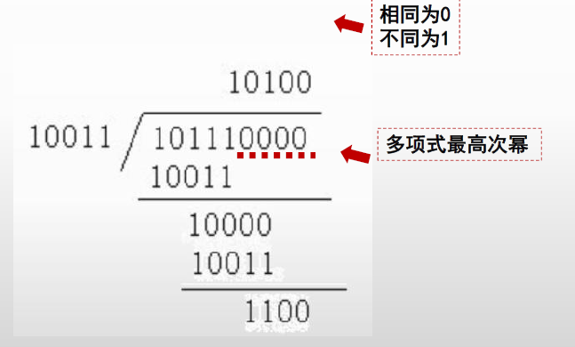
最终码为：101111100
指令
流水线
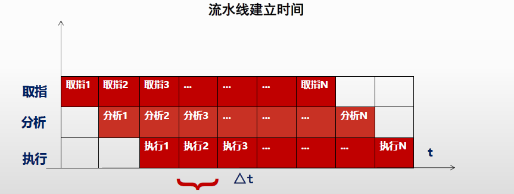
流水线
- 周期($\triangle t$)：不同阶段，执行时间最长的一段的时间；
- 执行n条指令的执行时间：
- 理论公式：$（t1 + t2 + ... + tk) + (n - 1) * \triangle t$
-
实际公式：$（k + n - 1) * \triangle t$，即开始的第一条的执行，每段的执行时间统一按照同样的周期算；
-
吞吐率：指令执行条数 / 流水线的执行时间；
- 最大吞吐率：是指令执行周期的倒数；
- 加速比：不使用流水线的时间比上使用流水线的时间；
高速缓冲存储器（Cache）
映射方式
主存放入Cache的几种计算方式：
-
直接映射：主存划分为区（等价于Cache的大小），区内位置一一映射到Cache对应位置；
-
算法简单（取模），但冲突率高
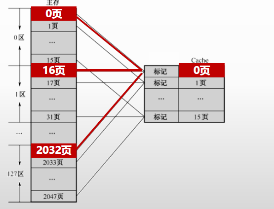
-
全相联映射：主存的每个位置都可以映射到Cache的每个位置
-
位置不受限，无法从主存块号中直接获得Cache的块号（需要一一比较是否存在），变换比较复杂，速度比较慢
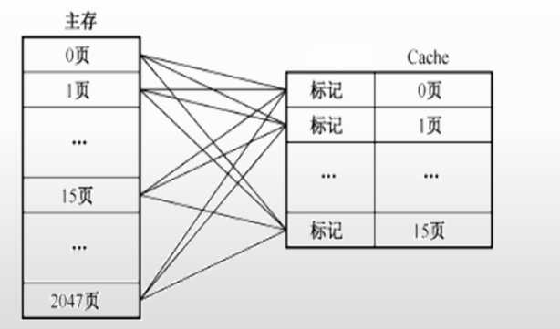
-
组相联映像：Cache划分为多组，组内采用全相联，组间直接相连
-
通过直接映射决定组号，全相联映射决定块号；
- 主存和Cache按同样大小划分成块，主存和Cache按同样大小划分成组
- 主存中组内的块数(下图Cache的0-7共8组），等于Cache的分组数（下图的127区)；
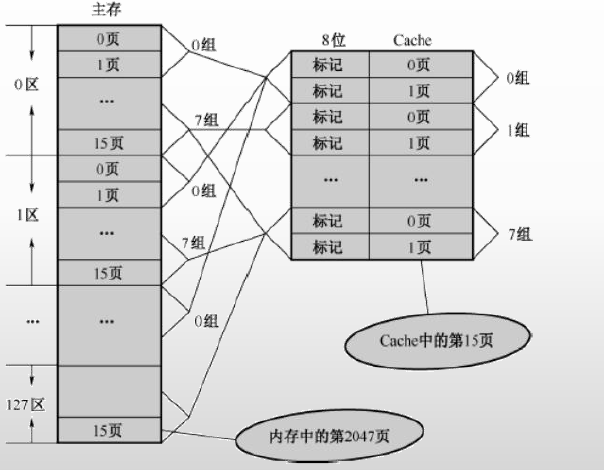
写策略
写回法（write-back）：修改cache的内容，不立即写入主存，只有此行被换出时才写回主存。
写直达（write-through）：修改cache的内容，立即写入主存；
标记法：修改数据时，数据不写缓存只写入内存，同时将cache的标志位从1改为0；
磁盘存储器
存储容量=$n×t×s×b$，n表示盘面数。
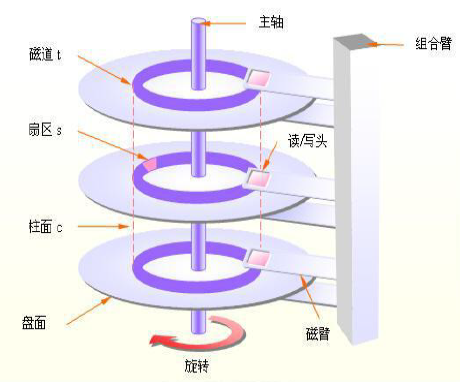
存储单位
扇区
扇区是块设备传输数据的基本单元（磁盘进行读写的最小单位是扇区），是块设备中最小的寻址单位，扇区通常的大小为512B。
块（Block）
内核执行的所有磁盘操作都是以块为基本单位。
磁盘块由连续几个（2^n）扇区组成。
页（Page）
页、内存页或者虚拟页是指内存中的一段固定长度的块，其在物理地址和虚拟内存地址上都是连续，内存的最小存储单位。
一个页通常是以下操作的最小单元：
- 操作系统为程序分配空间；
- 内存和外存传输，比如说硬盘。
页的大小为磁盘块大小的2^n倍（一般磁盘块和页大小都是4K）。
RAID
RAID (Redundant Array of Independent Disks ) ：独立磁盘冗余阵列
多个独立的高性能磁盘驱动器组成的磁盘子系统，从而提供比单个磁盘更高的存储性能和数据冗余的技术，是一类多磁盘管理技术；
-
镜像：将数据复制到多个磁盘，一方面可以提高可靠性，另一方面可并发从两个或多个副本读取数据来提高读性能。显而易见，镜像的写性能要稍低，确保数据正确地写到多个磁盘需要更多的时间消耗。
-
数据条带：将数据分片保存在多个不同的磁盘，多个数据分片共同组成一个完整数据副本，这与镜像的多个副本是不同的，它通常用于性能考虑。数据条带具有更高的并发粒度，当访问数据时，可以同时对位于不同磁盘上数据进行读写操作， 从而获得非常可观的 I/O 性能提升 。
-
数据校验：利用冗余数据进行数据错误检测和修复，冗余数据通常采用海明码、异或操作等算法来计算获得。利用校验功能，可以很大程度上提高磁盘阵列的可靠性、鲁棒性和容错能力。不过，数据校验需要从多处读取数据并进行计算和对比，会影响系统性能。
RAID0 - RAID6
- RAID0 是一种简单的、无数据校验的数据条带化技术，不是一种真正的 RAID ，因为它并不提供任何形式的冗余策略。
- RAID1 称为镜像，它将数据完全一致地分别写到工作磁盘和镜像 磁盘，它的磁盘空间利用率为 50% 。
- RAID1 在数据写入时，响应时间会有所影响，但是读数据的时候没有影响。
-
RAID1 提供了最佳的数据保护，一旦工作磁盘发生故障，系统自动从镜像磁盘读取数据，不会影响用户工作。无校验的相互镜像；
-
RAID2 称为纠错海明码磁盘阵列，大数据传输IO性能高，但不利于小批量数据传输，数据冗余开销大，很少应用；
-
单纠错，双验错，需要增加校验盘（4块数据盘需要增加三块校验盘）；
-
RAID3 （奇偶校验码的磁盘阵列），至少需要三块磁盘（两块数据，一块校验）
- RAID3 完好时读性能与 RAID0 完全一致，并行从多个磁盘条带读取数据，性能非常高，同时还提供了数据容错能力；
- 向 RAID3 写入数据时，必须计算与所有同条带的校验值，并将新校验值写入校验盘中。一次写操作包含了写数据块、读取同条带的数据块、计算校验值、写入校验值等多个操作，系统开销非常大，性能较低。
-
读性能高、连续写性能高、随机写性能差，最少 3 个盘、有效容量 N-1、允许坏 1 个盘。
-
RAID4和RAID3很像，数据都是依次存储在多个硬盘之上，奇偶校验码存放在独立的奇偶校验盘上，
-
在数据分割上RAID3对数据的访问是按位进行的，RAID4是以数据块为单位。
-
RAID5（无独立校验盘的奇偶校验码的磁盘阵列） 应该是目前最常见的 RAID 等级，校验数据分布在阵列中的所有磁盘上，而没有采用专门的校验磁盘，按照块的方式来组织数据；
- 为 RAID0 和 RAID1 的折中方案，大批量和小批量的数据读写性能都很好；
-
读性能高、连续写性能高、随机写性能一般，最少 3 个盘，N块盘时有效容量 N-1、允许坏 1 个盘；
-
RAID6 （独立的数据硬盘与两个独立的分布式校验方案）具有快速的读取性能、更高的容错能力（允许坏 2 个盘）：
- 与RAID5比，增加了第二个独立的奇偶校验信息块，奇偶系统使用不同的算法；
- 成本要高于 RAID5 许多，写性能也较差，并且设计和实施非常复杂；
- RAID6 很少得到实际应用，主要用于对数据安全等级要求非常高的场合；
-
一般是替代 RAID10 方案的经济性选择。最少 4 个盘、N块盘有效容量 N-2、允许坏 2 个盘。
-
RAID7（最优化的异步高IO速率和高数据传速率）：独立存储计算机，自身带有操作系统和管理工具，完全独立运行；
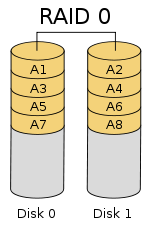 |
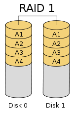 |
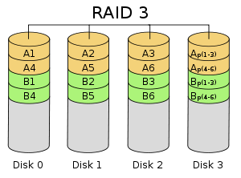 |
|---|---|---|
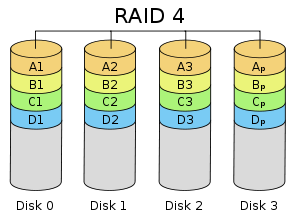 |
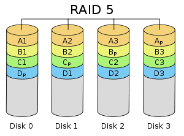 |
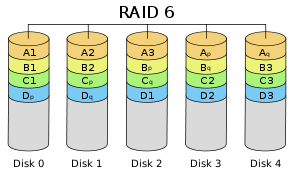 |
实现方式：
- 软件：没有专用的控制芯片和 I/O 芯片，完全由操作系统和 CPU 来实现所的 RAID 的功能；通过在磁盘设备驱动程序上添加一个软件层，提供一个物理驱动器与逻辑驱动器之间的抽象层；
- 硬件：有自己的 RAID 控制处理与 I/O 处理芯片，甚至还有阵列缓冲；硬 RAID 包含 RAID 卡和主板上集成的 RAID 芯片， 服务器平台多采用 RAID 卡。 RAID 卡由 RAID 核心处理芯片（ RAID 卡上的 CPU ）、端口、缓存和电池 4 部分组成。其中，端口是指 RAID 卡支持的磁盘接口类型，如 IDE/ATA 、 SCSI 、 SATA 、 SAS 、 FC 等接口。
- 软硬件结合：RAID 虽然采用了处理控制芯片，但是为了节省成本，芯片往往比较廉价且处理能力较弱， RAID 的任务处理大部分还是通过固件驱动程序由 CPU 来完成
RAID01和RAID10
RAID01又称为RAID0+1，先进行条带存放（RAID0），再进行镜像（RAID1）。
RAID10（最可靠与高性能）又称为RAID1+0，先进行镜像（RAID1），再进行条带存放（RAID0），比较常用。
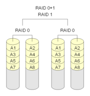 |
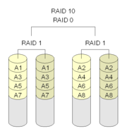 |
|---|---|
JBOD
JBOD （ Just a Bunch Of Disks ）不是标准的 RAID 等级，它通常用来表示一个没有控制软件提供协调控制的磁盘集合。 JBOD 将多个物理磁盘串联起来，提供一个巨大的逻辑磁盘。 存储性能完全等同于单块磁盘，而且也不提供数据安全保护
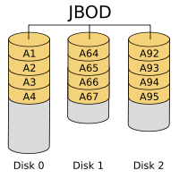
计算机体系结构分类
系统架构分类
- 对称多处理器结构(SMP：Symmetric Multi-Processor)，属于均匀存储器存取（Uniform-Memory-Access，简称UMA）模型(一致存储器访问结构)
- 各CPU共享相同的物理内存，每个 CPU访问内存中的任何地址所需时间是相同
-
扩展能力非常有限
-
非一致存储访问结构(NUMA：Non-Uniform Memory Access)
- 具有多个CPU模块，每个CPU模块由多个CPU(如4个)组成，并且具有独立的本地内存、I/O槽口等
-
访问远地内存的延时远远超过本地内存，因此当CPU数量增加时，系统性能无法线性增加
-
海量并行处理结构(MPP：Massive Parallel Processing)。
- 多个SMP服务器通过一定的节点互联网络进行连接，协同工作
共享存储型多处理机有两种模型
- 均匀存储器存取（Uniform-Memory-Access，简称UMA）模型(一致存储器访问结构)
- 非均匀存储器存取（Nonuniform-Memory-Access，简称NUMA）模型 (非一致存储器访问结构)
COMA和ccNUMA都是NUMA结构的改进
Flynn分类
分为指令流和数据流
SISD：单指令流单数据流，流水线方式的单处理机有时也被当做SISD；
SIMD：单指令流多数据流，如GPU，并行处理机（阵列处理机）；
MISD：多指令流单数据流，比较少见；
MIMD：多指令流多数据流，MPP、SMP、多核处理器、多处理机；
指令系统
复杂指令系统CISC
- 指令数量众多、使用频率悬殊、支持多种寻址方式、支持变长指令；
- 直接对主存单元中的数据直接进行处理，以微程序（硬件直接执行）控制为主；
精简指令系统RISC
- 指令数量少、寻址方式少、指令长度固定，适合流水线；
- 优化编译，以硬布线逻辑控制为主，通用寄存器个数较多；
总线
总线：一组能为多个部件分时共享的公共信息传送线路。
按照功能划分：
- 地址总线：传递地址信息；
- 数据总线：传送数据信息；
- 控制总线：传送控制信号；
按照数据线多少：
- 并行总线：多条双向数据线，有传输延迟，近距离连接，如系统总线（计算机各个部件）；
- 串行总线：一条双向数据线或者两条单向数据线，速率不高，长距离连接，如通信总线（计算机之间）；
按照工作方式分：
- 单工总线：只能在单个方向进行传输信息；
-
半双工总线：可以在两个方向轮流传输信息；
-
全双工总线：可以在两个方向同时传输信息；
字节序
字节排序按分为大端和小端，概念如下， 0x1234, low --> high
大端(big endian)： 低地址存放高有效字节, 00 00 12 34
小端(little endian)：低字节存放低有效字节, 34 12 00 00
TCP/IP统一采用大端方式传送数据，C/C++语言编写的程序里数据存储顺序是跟编译平台所在的CPU相关的，而 JAVA编写的程序则唯一采用big endian方式来存储数据。
VGA、DVI、HDMI
显卡产生数字信号，显示器使用数字信号
- VGA：输出和传递都是模拟信号，只含视频
- DVI：数字信号，25针和29针，只含视频，有空针脚没用（可以用来传递音频，但没有统一标准规范）
- HDMI：数字信号，包含视频和音频信息